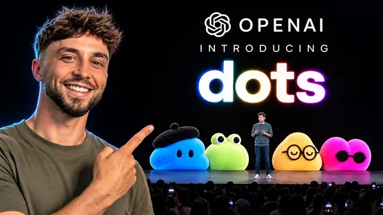

ChatGPT 새 비즈니스 플랫폼 써봤다 — 갈아탈 만한가?

원본 영상 보기 →
- AI 도입의 진짜 난제는 '1인용→팀 전체' 전환이다
- 플랫폼은 편하지만 '잠금 효과'가 있다
- 도구가 평준화될수록 가치는 설정·전략·교육으로 이동한다
한 줄 요약
OpenAI가 Dev Day에서 팀 전체와 AI 에이전트가 한곳에서 일하는 'ChatGPT 비즈니스 플랫폼'을 내놓았고, Liam Ottley가 자기 회사를 직접 옮겨 테스트했다. 결론은 "1인용 AI에서 멀티플레이어 AI로의 전환은 분명한 다음 단계지만, 옮기는 비용이 크니 작게 시작하고 우연이 아니라 의도를 가지고 플랫폼을 고르라"는 것이다.
전체 내용 정리
OpenAI가 내놓은 '멀티플레이어' 비즈니스 플랫폼
Liam은 4년 가까이 기업용 AI 시스템을 구축해 왔고, 요즘은 창업자들이 7개월이 아닌 7일 만에 AI 기반으로 회사를 운영하도록 돕는다. 그는 OpenAI가 Dev Day에서 발표한 비즈니스 플랫폼에 회사 전체와 팀원을 옮겨 새 기능을 모두 테스트했다. 그에 따르면 OpenAI는 기업용 AI 플랫폼을 내놓은 첫 거대 AI 기업이다. 일반 ChatGPT가 한 사람과 그 사람의 AI가 함께하는 1인용 서비스라면, 이건 팀 전체와 AI 에이전트가 한곳에서 일하는 멀티플레이어 방식이다.
핵심 기능: 닷(dots), Slack 속 ChatGPT, 스페이스·페이지
첫 번째는 '닷(dots)'이다. 복잡한 업무를 처리하도록 설계된 AI 직원 같은 에이전트인데, 클라우드에 자기만의 컴퓨터를 갖고 있다. 최근 나온 Grok 봇이나 메타의 Muse의 OpenAI 버전이라 볼 수 있지만, 플랫폼 안에서 알아서 설정·실행된다는 점이 다르다. 현재는 한 사람당 닷 하나만 가질 수 있고, Liam의 테스트에선 클릭 몇 번 만에 멈춰 버리기도 했다. 두 번째는 Slack 속 ChatGPT로, 팀원들이 Slack 안에서 ChatGPT·닷·에이전트와 함께 일할 수 있다. Liam도 고객에게 Slack 기반 AI 에이전트를 자주 만들어 주는데, AI 에이전트에 접근하는 아주 좋은 방법이라고 평가한다. 세 번째는 '스페이스(spaces)'와 '페이지(pages)'다. 구글 문서·드라이브처럼 팀 문서를 공유하는 공간을 ChatGPT 앱 안에 구현한 것으로, 에이전트와 닷이 맥락을 파악하는 곳이라 비즈니스 정보가 모두 여기에 쌓이게 된다. 슬라이드와 스프레드시트는 아직 출시되지 않았다.
가장 놀라운 부분은 관리자 콘솔, 그리고 비용
Liam이 가장 기대한 건 관리자 콘솔이다. 고객에게 AI 운영체제를 설정해 줄 때 가장 중요하고 어려운 부분이 싱글플레이어에서 멀티플레이어로의 전환인데, 그러려면 팀원이 누구인지, 각자 무엇에 접근할 수 있는지, 어떤 앱이 연결됐는지, 에이전트가 무엇을 했는지 제어할 수 있어야 한다. OpenAI는 이 부분을 매우 깊이 다뤘다. 아쉽게도 가장 세밀한 제어는 대기업용 엔터프라이즈 플랜에서만 되지만, 곧 소규모 기업으로 확대될 거라고 본다. 비용은 1인당 월 25달러의 ChatGPT 비즈니스 플랜이 필요하고, 프리미엄 좌석은 월 125달러다. 프리미엄 좌석이어야 계정당 닷 하나에 접근할 수 있고, ChatGPT 작업·채팅·Codex 사용량도 늘어난다.
왜 AI 플랫폼이 다음 단계인가
처음엔 AI 모델, 즉 두뇌만 있었다. 그다음 Claude Code·Codex처럼 AI가 도구를 써서 실제 일을 하게 해주는 소프트웨어인 하니스(harness)가 나왔다. 여기까지는 싱글플레이어 AI이고, 창업자 한 명에게는 지금도 잘 작동한다. AI 플랫폼은 팀·파일·에이전트, 그리고 누가 무엇을 할 수 있는지에 대한 규칙이 한곳에서 관리되는 다음 단계, 멀티플레이어 AI다. 모든 에이전트가 맞는 도구를 갖고, 모두가 같은 비즈니스 지식(공유 컨텍스트 계층)을 가져야 해서 구현이 어렵다. 그래서 Liam은 지난 몇 달간 고객에게 맞춤형 AI 시스템과 플랫폼 기반 AI 시스템을 나란히 설정해 주고 창업자가 고르게 했다. 많은 스타트업이 시도했지만 제대로 된 종합 비즈니스 솔루션을 낸 주요 AI 연구소는 OpenAI가 처음이다.
지금 갈아탈까, 기다릴까
Liam의 회사는 지금 직접 만든 AI 운영체제 위에서 돌아간다. 회사 지식 전부를 GitHub 폴더 하나에 규칙·스킬로 담아 Claude Code나 Codex에 연결하고, 원하는 코딩 에이전트로 바꿔 쓴다. 하지만 플랫폼에 문서·에이전트·팀이 들어가면 나중에 옮기기 어려워진다. 계정 추가, 지식 데이터 이전, 팀 교육까지 상당한 노력·시간·비용이 든다. 그래서 OpenAI에 올인할 수도, 다른 곳의 출시를 기다렸다가 필요한 기능을 갖춘 곳으로 갈 수도 있다. Google Docs·Calendar·Gmail 등 구글 스택 중심이라면 Liam은 좀 더 기다리겠다고 한다. 구글은 이미 다 갖추고 파일도 거기 있으니 3~6개월 안에 자체 플랫폼이 나올 것으로 보고, Microsoft도 이미 많은 기능을 제공한다. 가장 궁금한 건 Anthropic의 대응이다. 이미 ChatGPT를 활발히 쓴다면 작게 시작하길 권한다. Liam도 CTO 제시와 2인용 플랜으로 기능을 하나씩 시험하는 중이다.
AI 에이전시에게 남는 것: 설정·전략·교육
AI를 고객에게 파는 에이전시는 새 도구나 모델이 나올 때마다 다시 구축해야 해서 탄탄한 사업을 만들기 어려웠다. Liam이 기다려온 건 고객에게 설정해 주고, 팀을 교육하고, 분기마다 점검할 수 있는 깊이 있는 플랫폼 하나이고, 이제 그 목표에 매우 가까워졌다. 그의 전략은 몇 개 플랫폼을 테스트해 최고를 가린 뒤, 그 플랫폼에서 고객을 세팅하고 성과를 내는 전문성을 키우는 것이다. 중요한 건 처음부터 시스템이 얼마나 멋진지가 아니라 결과였다. 가치의 상당 부분이 플랫폼에서 나오면 에이전시에 남는 건 설정·전략·사람 교육, 즉 도구 사용법을 가르치고 워크플로우를 바꾸고 모두가 AI 에이전트와 협업하게 만드는 일이다. 창업자나 소수 경영진만 다루던 7일 구축에서 회사 전체 온보딩으로 넓어지는 셈이다. 이런 플랫폼은 향후 6~12개월 안에 빠르게 자리 잡을 것이니, 우연이 아니라 의도를 가지고 골라야 한다.
핵심 인사이트
- AI 도입의 진짜 난제는 '1인용→팀 전체' 전환이다: 누가 무엇에 접근하고 에이전트가 무엇을 했는지 관리하는 권한·감사 기능이 있어야 팀 단위 AI가 굴러간다. OpenAI가 관리자 콘솔을 먼저 깊게 판 이유다.
- 플랫폼은 편하지만 '잠금 효과'가 있다: 문서·에이전트·팀이 한 플랫폼에 들어가면 옮기기 어렵다. 지금 쓰는 업무 도구(구글/마이크로소프트)가 어디에 있는지에 따라 기다리는 게 나을 수 있다.
- 도구가 평준화될수록 가치는 설정·전략·교육으로 이동한다: 플랫폼이 기능을 다 주면 남는 경쟁력은 "우리 업무에 맞게 세팅하고 사람들이 실제로 쓰게 만드는" 능력이다.
오늘 당장 해볼 것
- 우리 사무실이 문서·메일·일정을 구글, 마이크로소프트, 기타 중 어디에서 주로 쓰는지 적고, 그 회사의 AI 업무 플랫폼 출시 소식을 3~6개월 지켜볼지 결정한다.
- ChatGPT를 이미 쓰고 있다면 전원 이전 대신 1~2명만 ChatGPT 비즈니스 플랜(1인당 월 25달러)으로 시작해 한 달간 한 가지 업무에만 써 본다.
- 자동화·AI 업체와 상담할 때 "직원별 접근 권한과 AI가 한 작업 기록을 어떻게 관리하나요? 나중에 다른 플랫폼으로 옮길 때 데이터는 어떻게 가져오나요?"를 꼭 물어본다.